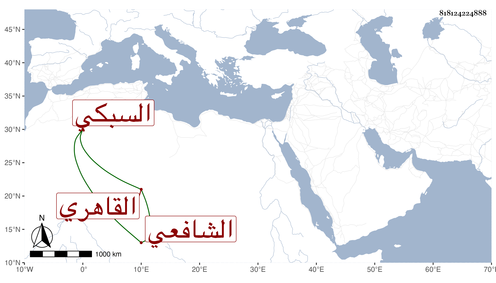

0902Sakhawi.DawLamic.ITO20230111-ara1.EIS1600.818124224888
Biography ID: 818124224888
318
محمد بن عبد الوهاب بن محمد الصدر بن البهاء السبكي الأصل القاهري الشافعي المتطبب . ولد قريبا من سنة ثلاث وسبعين وسبعمائة وحدده مرة بخمس وسبعين وحفظ القرآن والعمدة والتنبيه وألفية النحو وغيرها ، وعرض في سنة ثمان وثمانين وما قاربها على الجلال بن أحمد بن يوسف التباني والشمس الطرابلسي وابن عبد الرحمن الصائغ وأبي بكر بن عبد الله الشهير بالتاجر والجمال محمود بن محمد ابن علي العجمي الحنفيين والبدر الطنبدي وعبد اللطيف ابن أخت الجمال الأسنائي والشمس القليوبي والصدر الأبشيطي الشافعيين والشمس الركراكي المالكي والجمال عبد الله بن العلاء الحنبلي في آخرين وأجازه الكثير منهم واشتغل يسيرا ، وتكسب بالشهادة أولا ثم باشر النقابة عند الجمال البساطي المالكي مدة وكذا عند البساطي يسيرا مع نقصه في الصناعة وسوء خطه ، ثم تعانى الطب والكحل وخدم بالبيمارستان وباب الستارة وغيرهما مع أنه لم يكن بالبارع فيه أيضا ومع هذا فكان إذا كان مع الفقهاء يقول قال أبقراط مشيرا لمعرفة الطب وحين يكون مع الأطباء يقول كتابي كتاب النووي مشيرا إلى الفقه . مات في جمادى الأولى سنة ست وستين وقد شاخ وضعف بصره بل أشرف على العمى سامحه الله .
